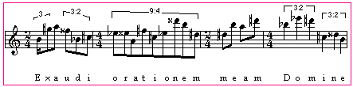

The words in the text determined the groupings and the rhythms to some extent, but we do not want just a continuous stream of notes and so, by listening to the composition very carefully one can define and choose which pitch interval and range would give musical character to a word and which rhythm pattern would be the most appropriate for a word within a phrase. By doing this organized work we are giving shape to the music. Two different composers using the same system, or algorithm, would naturally create compositions totally unlike in mood and style.
The preceding steps to Example 3 are explained in detail in Chapter I of my thesis, and furnish the order of pitch and rhythmic events.
Tempo, meter, and note(s) duration are three elements that work together to determine the pulse in the composition; the melodies in Reteplas were composed by retaining the method of the algorithm that is, the total amount of letters in a word would constitute the group of notes used in a measure. If changes become necessary because of musical considerations, the changes should be effected with stylistic consistency. This section and the next, illustrate some methods used to work the note sequences into a finished piece.
In the following example the words "Exaudi orationem meam, Domine" (first line from the Latin text) were translated into microtonality. In the first measure the word "Exaudi" was set as six notes in 2/4 time. (This is only arbitrary; the group could have been six quarter notes in 4/4 time or some other denomination). The word "Domine" in measure 4 was placed in two groups of 3:2 in 4/4 time, because the words are similar in that they both have a triplet rhythmic sound when spoken. The meaning of the Latin words "Exaudi" is "grant me" and "Domine" is derived from "dominator" or "ruler," in this case, "Lord". The notes from the word "Domine" as a whole were converted into greater denominations. In the first measure "Exaudi" has been subjected to a small variation because a small (upbeat) anticipation was needed to counteract the eighth note triplet feeling. Note that the alteration was done with a subdivision of the eighth note triplet that is a sixteenth note triplet.
Example 3: First part of Reteplas mm. 1-4.

Original file name: a5Reteplas - converted on Tuesday, 24 June 1997, 21:00